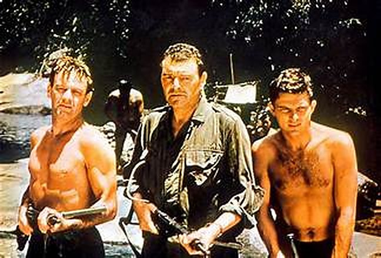
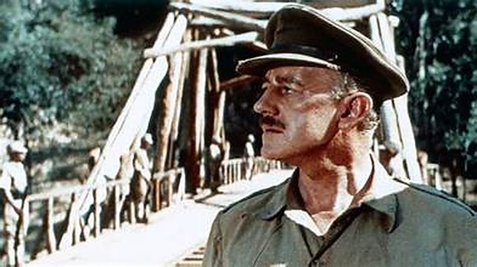

Je devais avoir une douzaine d'années. Un jour, mon grand-père s'est mis à siffloter une petite chanson. Intrigué, je lui ai demandé ce que c'était. Il m'a répondu que ça venait d'un film : Le Pont de la rivière Kwaï.
C'est comme ça que j'ai découvert ce film. Quelque temps plus tard, nous l'avons regardé ensemble. Et c'est à ce moment-là que j'ai compris qu'Alec Guinness n'était pas seulement Obi-Wan Kenobi.
Ce soir, on siffle en direction de la rivière Kwaï.

L'affiche belge d'époque du film
Février 1943. Un groupe de prisonniers de guerre britanniques, mené par le colonel Nicholson (Alec Guinness), arrive dans un camp japonais en Thaïlande. Nicholson est un officier à cheval sur la discipline et sur le règlement. Le commandant du camp, le colonel Saito (Sessue Hayakawa), a un ordre : les prisonniers vont construire un pont sur la rivière Kwaï.
Très vite, les deux hommes s'affrontent. Nicholson refuse que ses officiers participent aux travaux manuels, en invoquant la convention de Genève, et il tient tête à Saito, quoi qu'il lui en coûte. C'est un duel de volontés, entre deux hommes qui ne veulent céder ni l'un ni l'autre, dans la chaleur et l'humidité du camp.
Pendant ce temps, Shears (William Holden) est le seul survivant d'une tentative d'évasion. Il se rétablit loin du camp, mais le major Warden (Jack Hawkins) vient le recruter pour une mission de commando : détruire ce fameux pont. Shears est contraint d'y participer.
Deux camps, un seul pont, et des hommes qui n'ont pas la même idée de ce que signifie « gagner ».

En pleine jungle
Le Pont de la rivière Kwaï est tiré du roman de Pierre Boulle, publié en 1952. Le film sort en 1957, réalisé par David Lean et produit par Sam Spiegel, avec un tournage à grande échelle au Ceylan, l'actuel Sri Lanka. C'est une fiction : la construction de la voie ferrée de Birmanie n'y sert que de cadre historique, et la destruction du pont est entièrement inventée.
Sous ses airs de film de guerre, il parle d'abord d'orgueil. Nicholson et Saito sont deux hommes de devoir, chacun enfermé dans son code, et ce sont ces codes qui les opposent. Le film ne choisit pas un camp contre l'autre : il montre ce que la fierté, l'honneur et la discipline peuvent produire de plus noble, et de plus absurde. C'est ce qui lui donne sa profondeur.
Alec Guinness porte le film. Il joue Nicholson avec une raideur qui force l'admiration, puis le malaise, sans jamais le caricaturer. Face à lui, Sessue Hayakawa donne à Saito une vraie complexité, et William Holden apporte le contrepoint, un homme plus ordinaire qui ne rêve que de survivre.
La mise en scène de Lean fait le reste. La jungle, la chaleur, la lumière écrasante et le pont qui s'élève peu à peu occupent l'écran avec une ampleur rare. Et la musique de Malcolm Arnold, avec la Colonel Bogey March sifflée par les prisonniers, est restée l'une des plus reconnaissables du cinéma.
Le film a été salué dès sa sortie : sept Oscars, dont ceux du meilleur film, du meilleur réalisateur et du meilleur acteur pour Guinness. Il est devenu un classique parce qu'il est à la fois un grand spectacle et un film qui pose une vraie question : qu'est-ce qu'on construit, au juste, quand on construit pour l'ennemi ? Cinq ans plus tard, Lean prolongera cette ambition avec Lawrence d'Arabie.

Le pont en construction
Pourquoi le revoir ? Parce que Le Pont de la rivière Kwaï est de ces films qui se regardent à plusieurs âges. À douze ans, on y voit une aventure, un camp de prisonniers et un pont à détruire. Plus tard, on y voit autre chose : deux hommes de devoir, une question d'orgueil, et l'étrange façon dont on peut s'attacher à ce qu'on a construit, même au service de l'ennemi. Il dure 2 h 41, mais ne les fait pas sentir.
Pour moi, ce film, c'est d'abord une petite chanson sifflotée par mon grand-père, et l'envie de comprendre d'où elle venait. Puis un film regardé avec lui, et la découverte qu'Alec Guinness n'était pas seulement Obi-Wan Kenobi.
Certains films sont des chefs-d'œuvre. D'autres sont des souvenirs. Celui-ci est les deux.
La cassette est dans le lecteur. On rembobine.
Titre original
The Bridge on the River Kwai
Réalisateur
David Lean
Producteur
Sam Spiegel
Durée
161 min
Avec
Alec Guinness · William Holden · Jack Hawkins · Sessue Hayakawa
Musique
Malcolm Arnold
D'après
Le roman de Pierre Boulle (1952)
Note
Une chanson sifflotée par mon grand-père
SOMEDAY — LES CLASSIQUES EP. 01 · LA BANDE-ANNONCE